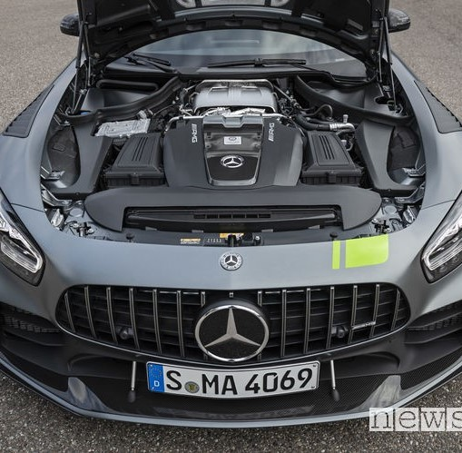
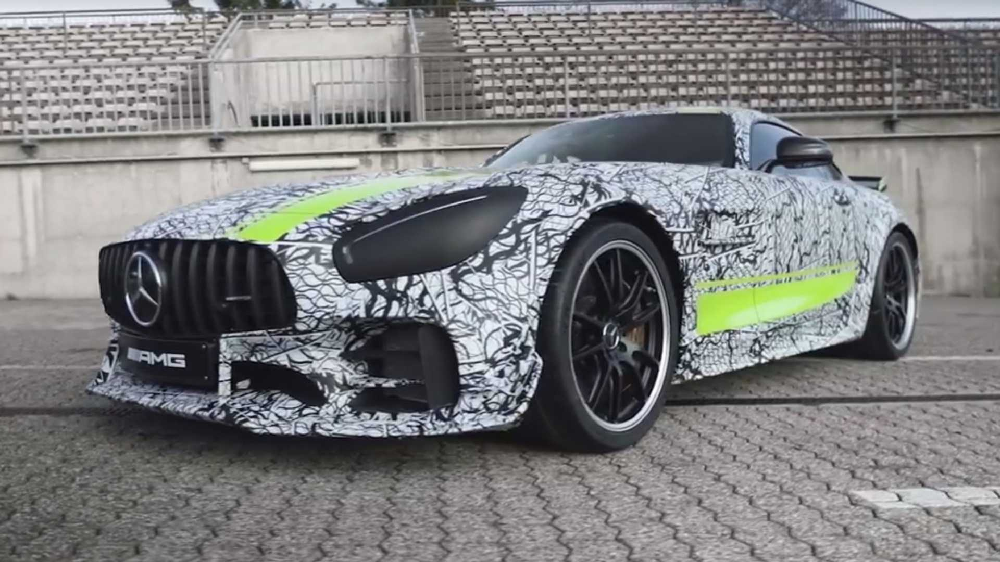
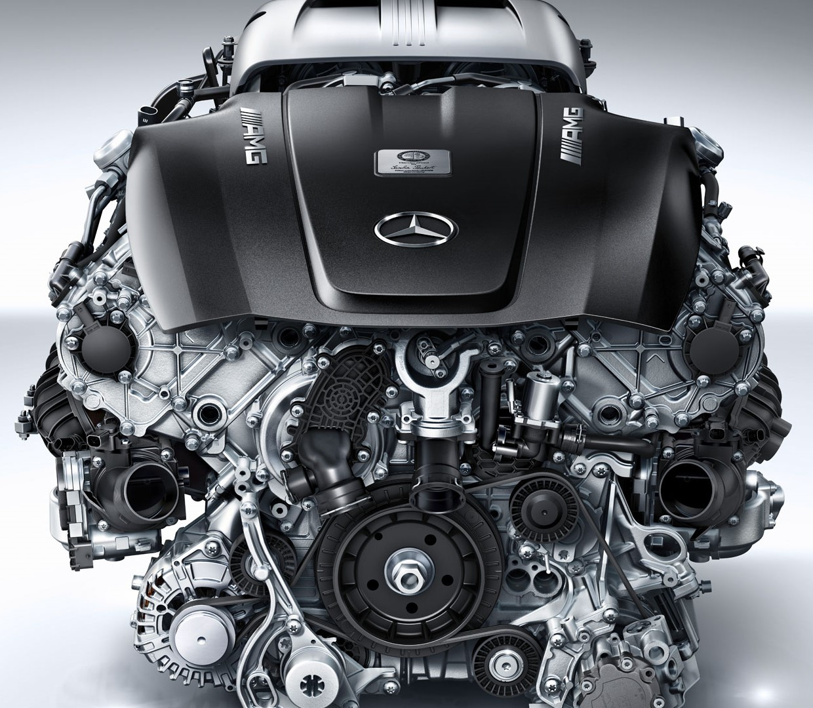
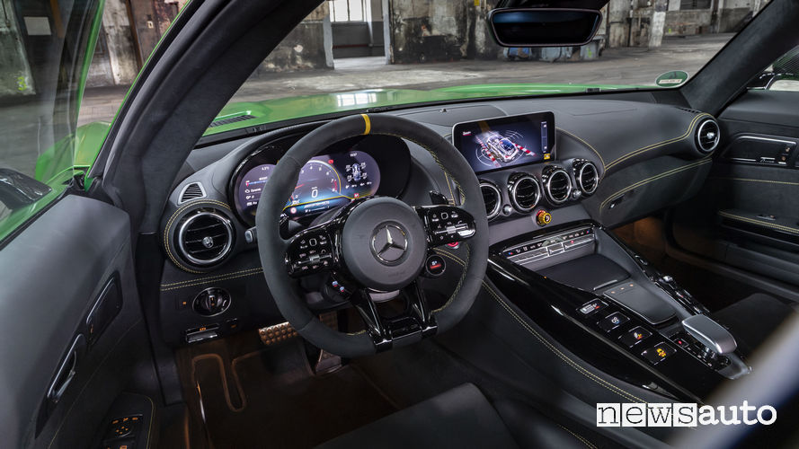
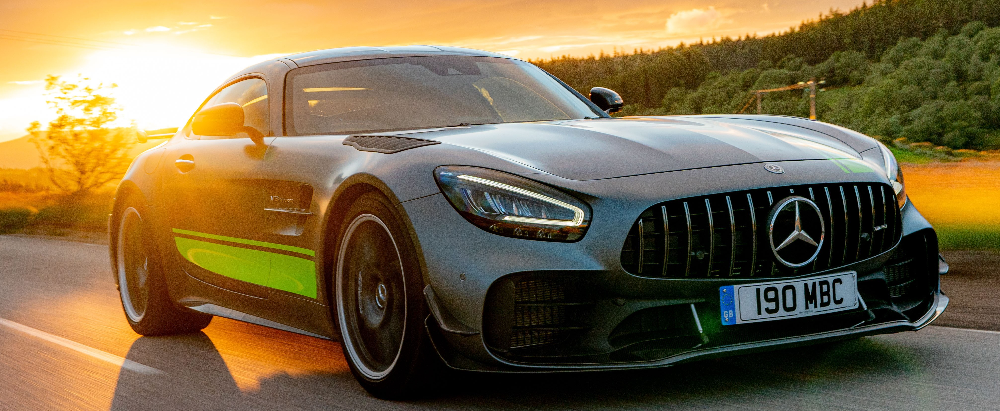
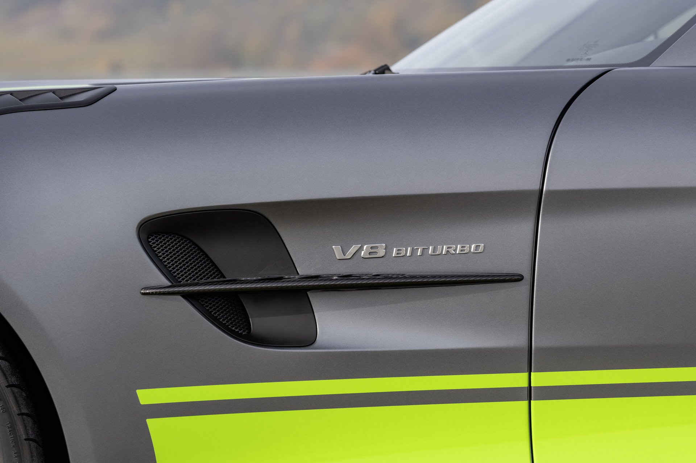
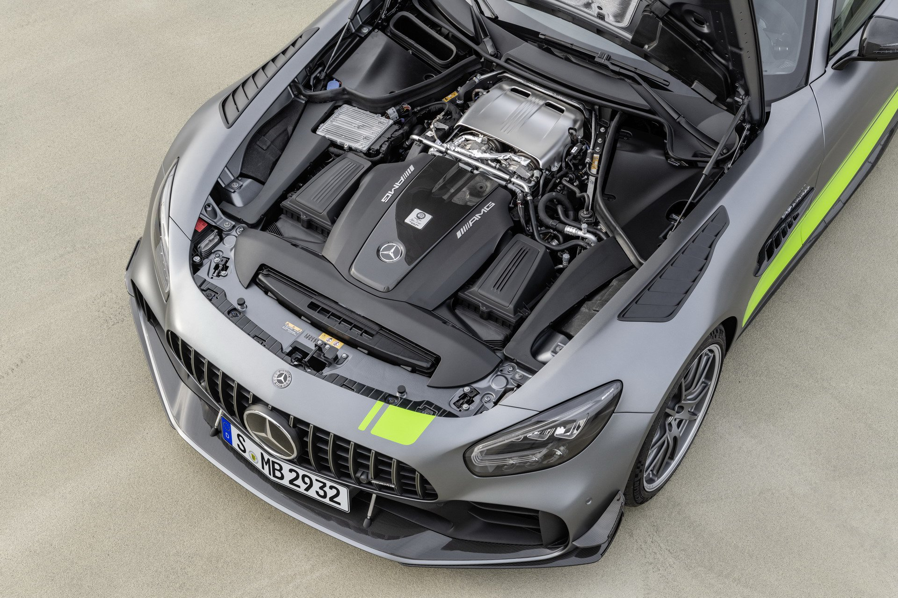
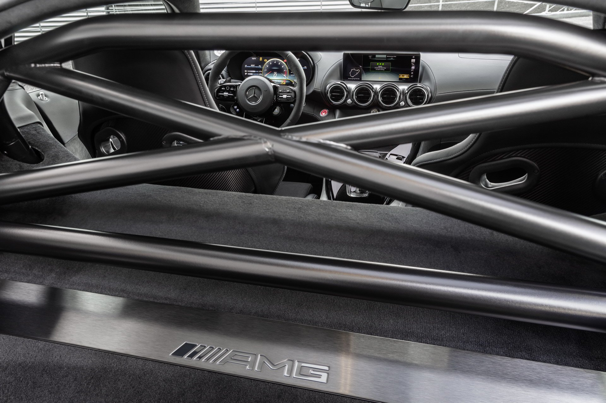
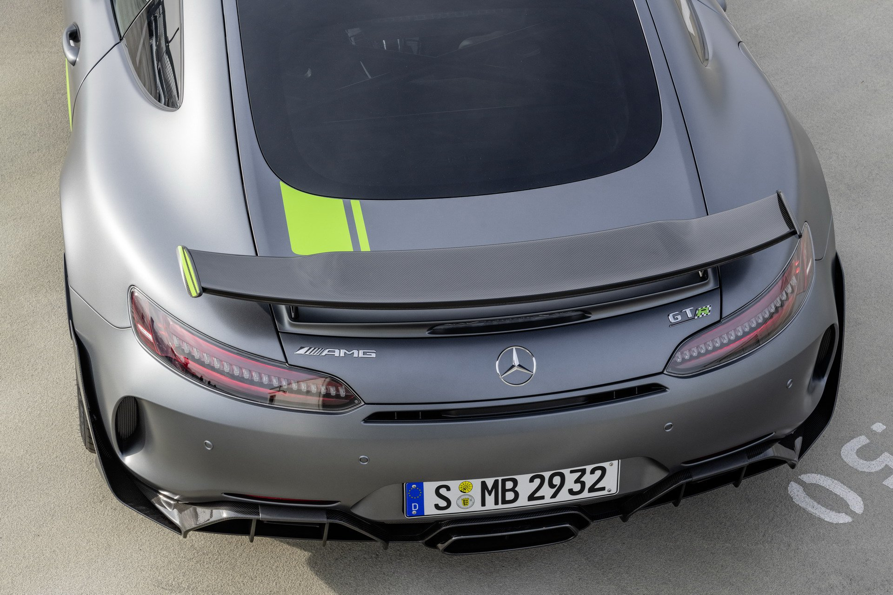
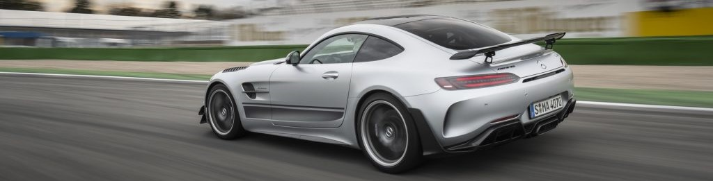

beat the beast.

| Mercedes-AMG GT-R PRO: beat the beast. | |
 |
Dopo esser stata perfezionata nel design, AMG GT si riconferma la quintessenza di ciò che si intende per Driving Performance: il motore anteriore centrale e il cambio in configurazione sull'asse posteriore abbinati al baricentro basso della vettura, consentono di ripartire il peso in modo vantaggioso. Tutte queste caratteristiche rendono l’auto estremamente maneggevole e consentono di raggiungere velocità elevate in curva: come il V8 biturbo AMG da 4,0 litri, che eroga molta potenza già a bassi regimi offrendo prestazioni sorprendenti. |
| Nonostante le prestazioni velocistiche, sulla carta, siano identiche rispetto alla GT R (0-100 km/h in 3,6 secondi e 318 km/h di velocità massima), l’evoluzione della sportiva promette una dinamica di guida ancor più affilata e, conseguentemente, una sensibile riduzione dei tempi sul giro. A disposizione del pilota sono presenti diverse regolazioni solitamente appannaggio delle sole auto da competizione: le sospensioni coil-over possono essere regolate meccanicamente in compressione ed estensione senza utilizzare alcun attrezzo specifico. È inoltre possibile settare anche il rapporto di compressione per le sollecitazioni ad alta o bassa velocità. Sull’asse anteriore è presente una barra di torsione regolabile di fibra di carbonio: la controparte sul retrotreno, anch’essa regolabile, è invece d’acciaio. A irrigidire il telaio è presente anche un pannello di fibra di carbonio integrato nel fondo che contribuisce a rendere più precisa la vettura insieme a nuovi cuscinetti sferici Uniball per i quadrilateri, sia superiori, sia inferiori, delle sospensioni che, grazie all’assenza di giochi consentono alla sportiva di mantenere inalterato la convergenza e il camber delle ruote anche nelle situazioni di guida più impegnativa. |  |
| La Mercedes GT R Pro, esteticamente, è molto simile alle AMG GT3 e GT4 che corrono nei campionati Gran Turismo ma con un paraurti anteriore ancora più pronunciato, sagomato e dotato di bocche d'areazione maggiorate che sovrastano uno splitter più massiccio. Nonostante un muso così 'appesantito' dalle bocche d'aerazione la coda e il profilo laterale sono più vuoti e lisci ad eccezione di un'ampia presa d'aria posizionata vicino alle ruote anteriori e all'alettone posteriore. Nata al Nurburgring, costruita per rompere record di tempo. |  |
|  | Il motore e i numeri sono quelli che abbiamo già visto sulla Mercedes GT R. Un V8 biturbo da 4.0 litri con 585 CV a 6.250 giri/min e 700 Nm espressi tra i 2.100 e i 5.500 giri/min con consumi dichiarati di 12,4 l/100 km, mentre lo 0-100 km/h viene bruciato in 3,6 secondi per una velocità massima di 318 km/h. Essendo una diretta evoluzione della AMG GT R, la Pro dispone della stessa base meccanica di quello che, fino a ora, rivestiva il ruolo di modello più sportivo dell’intera gamma di Stoccarda. |
| Anche negli interni della nuova Mercedes-AMG GT R Pro tutto è improntato alla guida in pista. Tra le novità tecnologiche troviamo il quadro strumenti digitale con display da 12,3 pollici che integra nuove funzioni specifiche per le performance sui circuiti, come ad esempio il data logger AMG Track Pace che rileva automaticamente il tracciando, indicando gli intertempi e visualizzando, con luci rosso o verdi, se il tempo è migliore o peggiore rispetto al precedente. Inoltre a bordo c’è il classico Traction Control, il selettore rotativo di Mercedes, e dei nuovi pulsanti con display a colori. |  |
Scheda tecnica |
|||
| Motore | AMG 4.0 V8 Biturbo | ||
| Potenza | 430 Kw (585 CV) | ||
| Coppia | 700 Nm | ||
| Accelerazione 0-100 | 3.6 s | ||
| Consumo medio | 12.4 l / 100 km | ||
| Velocità massima | 318 km/h | ||
|  | |
|  |  |
|  |  |
|  | |